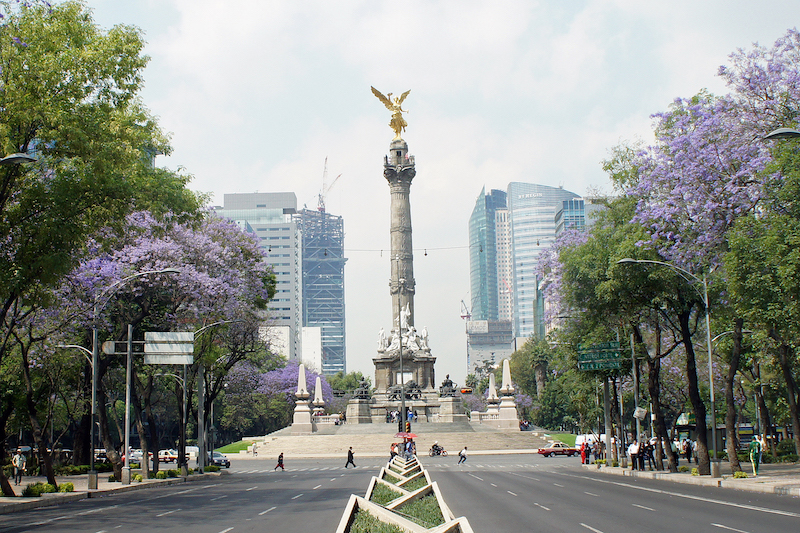
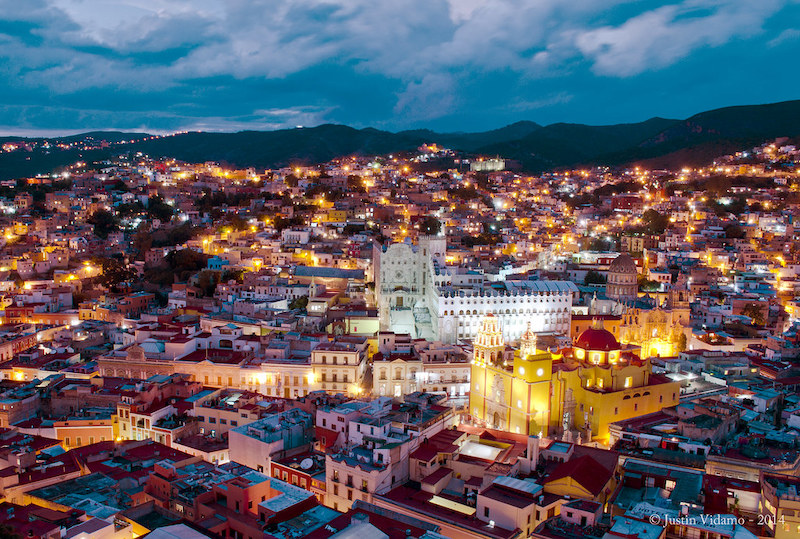
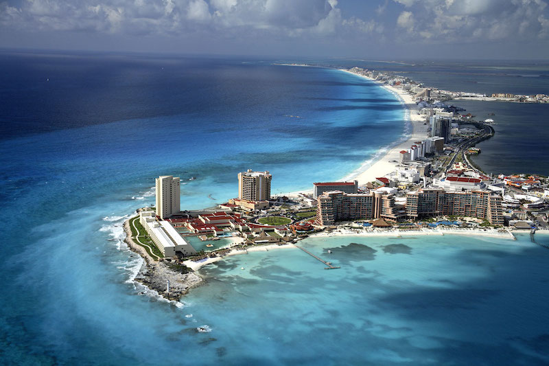
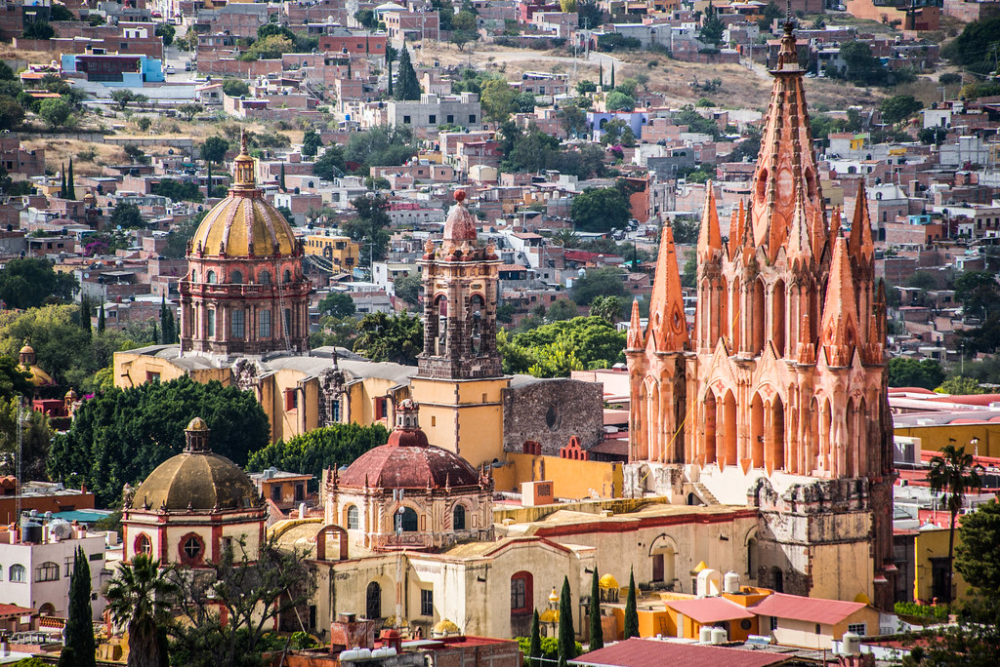

Magical Corners of Mexico
In this section, I would like to introduce you to some of the most striking destinations, with rich in culture, tradition, and nature. My purpose here is to demonstrate that in Mexico, you can find absolutely everything: whether it be adventure spots, places for relaxation, vibrant cities, and more.
Mexico City
To start with this list, I would like to start with Mexico City, as it is the country's capital, a place that is not only one of the largest in Mexico in terms of culture and history, but in all of Latin America.
This city is iconic and unique in many respects, as it combines European colonial architecture with Aztec architecture. It is not only historic, but also offers modernity and high-rise buildings. which makes it a unique destination for visitors from around the world.

Image source: Source
{kind=link}
Guanajuato
Guanajuato is one of the most picturesque cities not only in Mexico, but in the entire world; it is famous for its colorful streets, its narrow alleys, and its rich history.
It was declared a World Heritage Site by UNESCO, and this city offers many events, as well as numerous festivities such as the Day of the Dead.

Image source: source
Cancun
I would consider Cancún to be one of Mexico's most famous tourist destinations; it is known for its turquoise beaches, white sand, and clear, high-quality water, making it an ideal paradise for a family vacation and an unforgettable experience.
Near Cancún, there is a very similar resort to PCC called Xcaret. It features a highly attractive amusement park that offers a wealth of cultural experiences; in particular, its night show is so exceptional that it will move you to tears.

Image source: source
{kind=link}
Guadalajara
Guadalajara is one of the most important cities,and the capital of the state of Jalisco; I would also consider Guadalajara my favorite city, as it embodies what many regard as the Mexican stereotype.
The reason I say this is that Jalisco (specifically Guadalajara) is where mariachi and tequila are originated from, two highly representative cultural symbols of the country. This city offers not only culture, but also modernity, excellent gastronomy, and beautiful architecture.

Image source: Source
{kind=link}
Chichen Itza and Riviera Maya
We certainly cannot overlook Chichén Itzá and the Riviera. Here in Mexico, we are home to one of the Seven Wonders of the Modern World, famous for the magnificent Pyramid of Kukulcán. Throughout this entire region and its surroundings, you will discover lush vegetation featuring phenomenal waterfalls, cenotes, and beaches straight out of a movie. It is, without a doubt, a destination you simply cannot afford to miss.
info source: source

Image source: Source
{kind=link}
San Miguel
San Miguel de Allende is one of Mexico's most iconic and beautiful colonial cities. Located in the state of Guanajuato, it is renowned for its cathedrals, which feature a distinctly European influence. Furthermore, it has been designated by UNESCO as a World Cultural Heritage site.

Image soruce: source
The following table shows some of the most popular places you would not want to miss if you go to Mexico. Each one of these places has a lot to offer. From historical landmarks to beautiful natural landscapes.
| Rank | City | State | Main Attractions | Famous for |
|---|---|---|---|---|
| 1 | Mexico City | Mexico City | Angel de la Independencia, Bellas Artes, Zocalo (Main square), Tehotichuacan (Pyramids), Chapultepec park. | Great for learning the Culture and everything Mexico can offer to you. |
| 2 | Guadalajara | Jalisco | Guadalajara Cathedral, Historic Downtown, Teatro Degollado, Hospicio Cabañas, Mariachi Plaza | The birthplace of Mariachi music and Tequila. Strong traditions, mexican folklore and festivals. |
| 3 | Cancun | Quintana Roo | Beaches, One of the seven wonders of the world nearby. | One of the best spots in the world to have the perfect vacations (Turquoise water, and a lot of luxury resorts). |
| 4 | Guanajuato Capital | Guanajuato | Historic center (Teatro Juarez, Universidad de Guanajuato), Mummies Museum, Callejoneadas. | Known to be one of the most colorful cities in Mexico and in the world. Dia de muertos is very big in this town. |
| 5 | San Cristobal, Palenque, Cañon del Sumidero. | Chiapas | Pyramids, Protected natural areas with abundant vegetation, flora, and fauna. | It is known for its rich natural diversity, featuring numerous natural waterfalls (reminiscent of scenes straight out of a movie) along with spectacular views and a wealth of well preserved indigenous history and culture. |